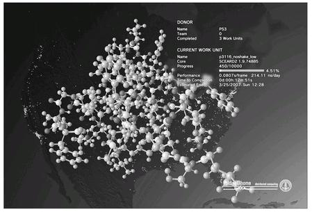

FOLDING@HOME ON PLAYSTATION 3
PLAYSTATION 3上的 FOLDING@HOME
“If you own a PS3, start saving lives. Real lives.”14
14 That’s how one blogger put it when he discovered Folding@home for the PlayStation 3, the world’s first distributed computing initiative just for gamers. A distributed computing system is like crowdsourcing for computers. It connects individual computers via the Internet into a giant virtual supercomputer in order to tackle complex computational tasks that no individual computer could solve alone.
For years, scientists have been harnessing the processing power of home computers to create virtual supercomputers tasked with solving real scientific problems. The most famous example is SETI@home, or Search for Extraterrestrial Intelligence at home, a program that harnesses home computers to analyze radio signals from space for signs of intelligent life in the universe. Folding@home is a similar system created by biologists and medical researchers at Stanford University in an effort to solve one of the greatest mysteries of human biology: how proteins fold.
Why is protein folding important? Proteins are the building blocks of all biological activity. Everything that happens in our bodies is a result of proteins at work: they support our skeleton, move our muscles, control our five senses, digest our food, defend against infections, and help our brain process emotions. There are more than one hundred thousand kinds of proteins in the human body, each consisting of anywhere from one hundred to one thousand different parts and made up of any combination of twenty different amino acids. In order to do its specific job, each kind of protein folds up into a unique shape.15
15岁
Biologists describe this process as a kind of incredibly complex origami. The parts can be arranged and folded up in almost any imaginable combination and form. Even if you know which amino acids make up a protein, and in how many parts, it’s still nearly impossible to predict exactly what form the protein will take. One thing scientists know for sure, however, is that sometimes, for unknown reasons, proteins stop folding correctly. They “forget” what shape to take—and when they do, this can lead to disease. Alzheimer’s disease, cystic fibrosis, Mad Cow disease, and even many cancers, for example, are believed to result from protein misfolding.
So scientists want to understand exactly how proteins fold and what shapes they take, in order to figure out how to stop proteins from misfolding. But given the nearly infinitely many different shapes each protein can take, it requires an incredibly long time to test all the various potential shapes. Computer programs can simulate every possible shape that a protein with a certain amino acid composition could make. But it would take thirty years to test all the different combinations for just one single protein, out of the hundred thousand proteins in our bodies. As the Folding@home FAQ section puts it, “That’s a long time to wait for one result!”
That’s why scientists use distributed computing systems. By dividing the work between multiple processors, the work can go much, much faster. Since 2001, anyone in the world has been able to connect their personal computer to the Folding@home network. Whenever their computer is idle, it connects to the network and downloads a small processing assignment—just a few minutes’ worth of protein-folding simulation. It submits the data to the network when it’s done.
But after nearly a decade of tapping into the spare processing power of personal computers, the team behind Folding@home realized that a more powerful platform for virtual supercomputing exists: game consoles like the PlayStation 3.
When it comes to data-crunching ability, game consoles are significantly more powerful than the average PC. That’s because the computational power required to render constantly changing 3D graphic environments is much greater than what’s required for ordinary home or work computing tasks, like Internet browsing or word processing. Even though there are collectively many more PCs in our homes than game consoles, if scientists could get even a small fraction of gamers to participate in distributed computing projects, they could double, triple, or even quadruple their supercomputing power.
But would gamers do it? Sony, the makers of the PS3 console, bet that they would. And they were right.

Screenshot of the Folding@home application for the PlayStation 3 system.
(Sony Corporation, 2009)
As a philanthropic venture, Sony developed a custom Folding@home application for the PS3. Gamers could log in, accept a protein-folding mission, and donate the power of their PS3 to get the mission done. They could watch the folding simulation in action, and keep tabs on just how much computational effort they’d personally contributed to the project.
Help save real lives when you’re not saving virtual lives. The message was compelling, and it caught on fast. Within days of Sony releasing the application, thousands of blog posts and online articles about “gaming for the greater good” spread across the entire online gamer landscape.
The gamer community has rallied around the mission with enormous enthusiasm. Online articles and blog posts proudly proclaimed: “PS3 Gamers Trying to Save the World!” On forums, players encouraged each other: “Have you cured cancer lately? Now is the best time to jump in and join the cancer-saving fun.”16
16岁 They set up competitive folding teams and tried to rally each other to action: “Your PS3 can’t do it without you.” “It’s time to do your part for humanity.”17
17
Within six months, gamers collectively helped the Folding@home network achieve supercomputing milestones never achieved by any other distributed computing network anywhere in the world. As a senior developer for the PS3 Folding@home project announced on the official PlayStation blog:This time it’s something that the Folding community and the computer science field as a whole have been anxiously awaiting—the crossing of a milestone known as a petaflop. A petaflop equals one quadrillion floating point operations per second (FLOPS). If you’d like to imagine this enormous computation capacity, think about calculating a tip on a restaurant bill, now do that for 75,000 different bills, now do that every second, and lastly, imagine everybody on the planet is doing those calculations at the same second—this is a petaflop calculation. Now you see why I say enormous . . .18
18岁
With an epic context like that, it’s no wonder gamers rose to the occasion. They live for opportunities to be of service to extreme-scale goals. As one gamer said, “You might as well be bragging that you helped cure cancer, instead of just beating the game on the hardest difficulty level without dying once.”19
19
Today, PS3 users account for 74 percent of the processing power used by Folding@home. So far, more than a million PS3 gamers on six continents have contributed spare computing cycles to the Folding@home project. That’s one out of every twenty-five gamers on the PS3 network.20
20 The gamers are vastly outcontributing everyone else on the network—and they’re far more active on Folding@home forums, keeping close tabs on what their efforts are adding up to.
Now every PS3 comes preloaded with Folding@home software, making it even easier for any gamer to opt in to a scientific mission. As it stands, long after the initial September 2008 launch, gamers continue to sign up for the collective effort at the rate of three thousand a day, or two new volunteers every minute.21
二十一岁
The Folding@home project for the PlayStation 3 is a perfect example of matching ability with opportunity, which is the fundamental dynamic of any good crowdsourcing project. It’s not enough to draw a crowd—you have to ask the crowd to do something they have a real chance of doing successfully. Every PS3 gamer is capable of easily and successfully contributing spare processing power. Meanwhile, Sony, working with Stanford University, has created an opportunity for that contribution to really mean something.
GAMERS’ MASS PARTICIPATION in, and enthusiasm for, this big crowd project is a clear sign that there is a growing desire to be of service to real-world causes. For decades, gamers have been answering heroic calls to action in virtual worlds. It’s time we ask them to answer real-world calls to action, and all the evidence suggests that they are more than happy—they are happier—to rise to the real-world occasion.
The next major step to take, then, will be to harness gamers’ minds, and not just their consoles. Gamers are creative, persistent, and always up for a good challenge. Their strong cognitive resources, combined with their proven engageability, are a valuable resource just waiting to be tapped. In fact, a team of medical scientists, computer scientists, engineers, and professional game developers from the Seattle area are banking on that fact. They believe that gamers can use their natural creative ability and problem-solving abilities to learn to design new protein shapes and actively help cure diseases. They’ve created a protein-folding game called Foldit, which represents a dramatic leap of faith forward from the Folding@home project.
Instead of harnessing their video game hardware to run complex protein-folding simulations, Foldit harnesses the real brain power of gamers, challenging them to use their creativity and ingenuity to fold digital proteins by hand.
In the game, players manipulate proteins in a 3D virtual environment that one reviewer describes as “a twenty-first-century version of Tetris, with multicolored geometric snakes filling the screen.”22
22 The geometric snakes represent all the different building blocks of a protein, the amino acid chains that connect and fold up into incredibly complex patterns in order to perform different biological tasks in the body. In Foldit, the player’s goal is to learn what kinds of patterns are the most stable and successful for doing different jobs, by taking an unfolded protein and folding it up into the right shape. This is called a “protein puzzle.”
Players learn how to fold proteins by working on “solved” puzzles, or proteins that scientists already know how to fold. Once they’ve got the hang of it, they’re encouraged to try to predict the shape of a protein that scientists haven’t successfully folded yet, or to design a new protein shape from scratch, which researchers could then manufacture in a lab.
“Our ultimate goal is to have ordinary people play the game and eventually be candidates for winning the Nobel Prize in biology, chemistry or medicine.” Zoran Popović, a professor of computer science and engineering at the University of Washington, and one of the lead researchers on the Foldit project, declared these Nobel aspirations in his address to the Games for Health conference in the spring of 2008, just weeks before opening up the new protein-folding puzzle game to the public.23
23 Within eighteen months of its release, the game had attracted a registered community of more than 112,700 players—most of whom, according to researchers, had little to no previous experience in the field of protein folding. “We’re hopefully going to change the way science is done, and who it’s done by,” Popović said.
The Foldit team is well on its way to doing just that. In the August 2010 issue of the prestigious scientific journal Nature, the team declared its first significant breakthrough: In a series of ten challenges, gamers beat the world’s most sophisticated protein-folding algorithms five times, and drew even three times. The authors concluded that gamer intuition can successfully compete with supercomputers—especially when the problems being solved require taking radical, creative risks.24
24 Most notably, the Nature study wasn’t just about the Foldit players; it was by the Foldit players. More than 57,000 gamers were listed as official coauthors alongside Popović and his university colleagues.25
25
IN THE DECADES to come, there will be many more challenges for us to tackle together as crowds: more citizen journalism investigations, more collective intelligence projects, more humanitarian efforts, more citizen science research. There’s no shortage of world-changing collective work to be done—so we can’t allow ourselves to be limited by a shortage of incentive or compensation.
Many crowdsourcing projects today are experimenting with micropayments, or small amounts of monetary reward, in return for contributions. The Amazon Mechanical Turk marketplace, which gives businesses access to a global virtual workforce, pays participants a few cents for each helpful contribution to a human intelligence task, or HIT—a cognitive task “that only a human, and not a computer, could do” (such as labeling images, characterizing the emotional quality of song lyrics, or describing the action in short videos). Others offer prizes for top contributions. The CrowdSPRING marketplace, for example, offers prizes starting at $5,000 to individuals who submit the most helpful ideas—for example, helping name a new product or improve an existing service.
The logic behind these practices is that if people are willing to contribute for free, they’ll be even happier to contribute when they’re compensated. But compensating people for their contributions is not a good way to increase global participation bandwidth, for two key reasons.
First, as numerous scientific studies have shown, compensation typically decreases motivation to engage in activities we would otherwise freely enjoy.26
26 If we are paid to do something we would otherwise have done out of interest—such as reading, drawing, participating in a survey, or solving puzzles—we are less likely to do it in the future without being paid. Compensation increases participation only among groups who would never engage otherwise—and as soon as you stop paying them, they stop participating.
Second, there are natural limits on the monetary resources we can provide a community of participants. Any given project will have only so much financial capital to give away; even a successful business will eventually hit an upper limit of what it can afford to pay for contributions. Scarce rewards like money and prizes artificially limit the amount of participation a network can inspire and support.
We need a more sustainable engagement economy—an economy that works by motivating and rewarding participants with intrinsic rewards, and not more lucrative compensation.
So if not money or prizes, then what will most likely emerge as the most powerful currency in the crowdsourcing economy? I believe that emotions will drive this new economy. Positive emotions are the ultimate reward for participation. And we are already hardwired to produce all the rewards we could ever want—through positive activity, positive achievements, and positive relationships. It’s an infinitely renewable source of incentive to participate in big crowd projects.
In the engagement economy, we’re not competing for “eyeballs” or “mind-share.” We’re competing for brain cycles and heartshare. That’s why success in the new engagement economy won’t come from providing better or more competitive compensation. It will come from providing better and more competitive engagement—the kind of engagement that increases our personal and collective participation bandwidth by motivating us to do more, for longer, toward collective ends. And no one knows how to augment our collective capacity for engagement better than game developers.
Game designers have been honing the art of mass collaboration for years. Games inspire extreme effort. Games create communities that stick together over time, long enough to get amazing things done together. If crowdsourcing is the theory, then games are the platform.
Which brings us to our next fix for reality: FIX # 11 : A SUSTAINABLE ENGAGEMENT ECONOMY
Compared with games, reality is unsustainable. The gratifications we get from playing games are an infinitely renewable resource.
Good game developers know that the emotional experience itself is the reward. Consider the following job listing for Bungie, the company that creates the Halo video game series:Do you dream about creating worlds imbued with real value and consequence? Can you find the fine line between a reward that encourages players to have fun and an incentive that enslaves them? Can you devise a way for a player to grow while preserving a delicate game balance? If you answered yes to these questions, you might want to polish up your résumé and apply to be Bungie’s next Player Investment Design Lead.
The Player Investment Design Lead directs a group of designers responsible for founding a robust and rewarding investment path, supported by consistent, rich and secure incentives that drive player behavior toward having fun and investing in their characters, and then validates those systems through intense simulation, testing and iteration.27
27
This kind of job doesn’t yet exist outside of the game industry. But it should. “Player investment design lead” is a role that every single collaborative project or crowd initiative should fill in the future. When the game is intrinsically rewarding to play, you don’t have to pay people to participate—with real currency, virtual currency, or any other kind of scarce reward. Participation is its own reward, when the player is properly invested in his or her progress, in exploring the world fully, and in the community’s success.
So how exactly do you design good player investment? The Bungie job listing further details some of the core responsibilities of the position—and, in a nutshell, they give us a very good idea of four engagement principles any big crowd project should follow. As you can see, these four principles all serve the ultimate goal of building a compelling game world, satisfying game mechanics, and an inspiring game community.
The Player Investment Design Lead will design the mechanics that drive in-game player reward and incentives:
• So players feel invested in the world and their character.
• So players have long-term goals.
• So players can’t grief or exploit them, or each other.
• So that content are rewards in and of themselves.
In other words, participants should be able to explore and impact a “world,” or shared social space that features both content and interactive opportunities. They should be able to create and develop a unique identity within that world. They should see the bigger picture when it comes to doing work in the world—both an opportunity to escalate challenge and to continue working over time toward bigger results. The game must be carefully designed so that the only way to be rewarded is to participate in good faith, because in any game players will do anything they get the most rewarded for doing. And the emphasis must be on making the content and experience intrinsically rewarding, rather than on providing compensation for doing something that would otherwise feel boring, trivial, or pointless.
Do these principles work as effectively for real-world problem solving as for virtual-world problem solving? Absolutely. They are clearly the shared secret of the success for projects like Investigate Your MP’s Expenses, Wikipedia, Free Rice, and Fold It!. In each case, the experience of participation is rewarding on its own merits, immersing a player inside an interactive world that motivates and rewards his or her best effort.
Gamers who have grown up being intensely engaged by well-designed virtual environments are hungry for better forms of engagement in their real lives. They’re seeking out ways to be blissfully productive while cooperating toward extreme-scale goals. They are a natural source of participation bandwidth for the kinds of citizen journalism, collective intelligence, humanitarian, and citizen science projects that we will increasingly seek to undertake.
As the examples in this chapter demonstrate, crowdsourcing games have an important role to play in how we achieve our democratic, scientific, and humanitarian goals over the next decade and beyond.
And more and more, these crowdsourcing games won’t be just about online work or computational tasks. Increasingly, they will take us out into physical environments and face-to-face social spaces. These new games will challenge crowds to mobilize for real-world social missions—and they may make it possible for gamers to change, or even save, real people’s lives as easily as they save virtual lives today.